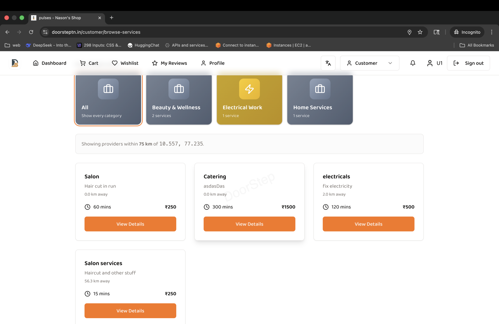
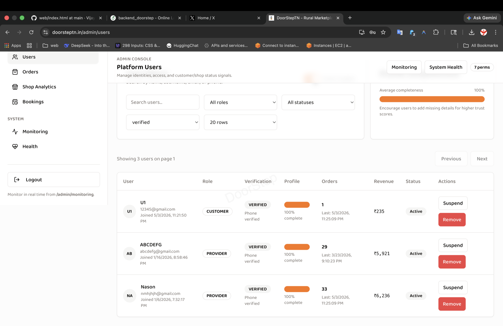

05 / Independent full-stack project
DoorStep marketplace
A local commerce platform connecting customers, shops, and service providers through a shared web and native Android architecture.

The product
Local products and services, across web and Android.
I built DoorStep as a multi-role local commerce platform for product discovery, service booking, and administration. A React web application and native Kotlin Android application share an Express API and PostgreSQL data model.
- 01Web & AndroidReact and Vite on the web; Kotlin and Jetpack Compose on mobile.
- 02Shared APIExpress and TypeScript for business workflows, roles, sessions, and validation.
- 03Data & background workPostgreSQL with Drizzle, Redis, BullMQ jobs, SSE events, and Firebase notifications.
My contribution
One backend, consistent business workflows.
Architecture & data
A shared API and PostgreSQL schema, with Drizzle and Zod supporting typed data access and validation across marketplace and booking workflows.
Product delivery
Web and Android interfaces, role-based access, notifications, and deployment tooling. I used AI coding agents to accelerate implementation while focusing on system architecture and integration.


Explore the evidence